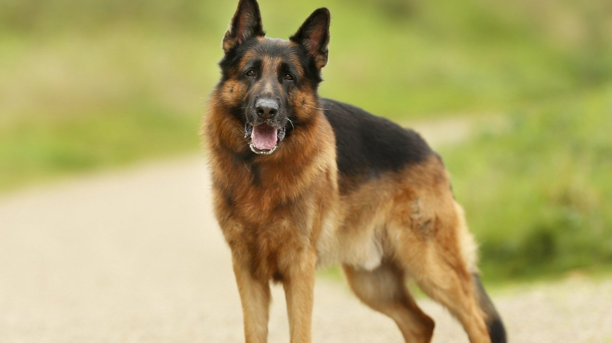
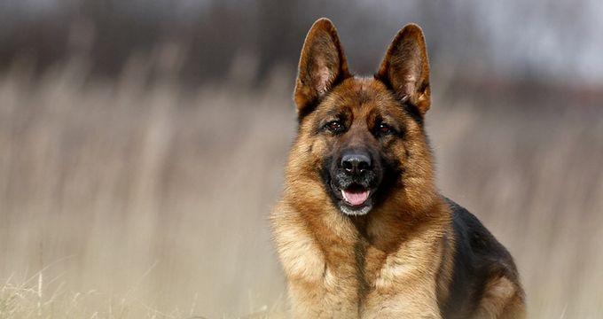
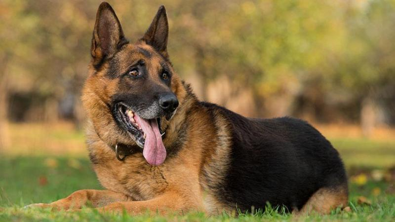
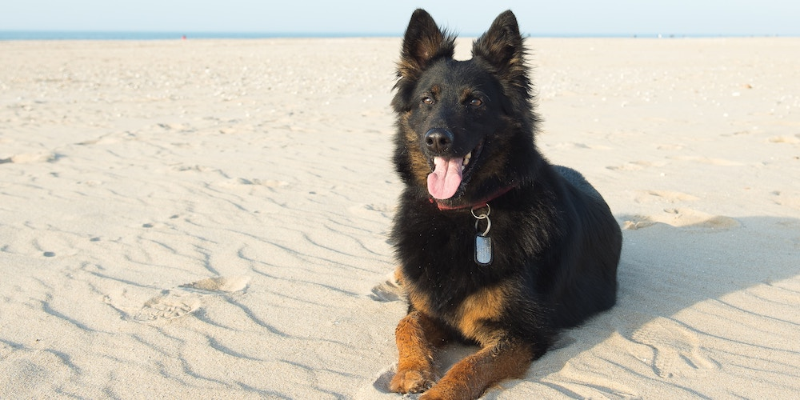

German Shepherd
"The name retriever refers to the breed's ability to retrieve shot game undamaged due to their soft mouth.  Golden retrievers have an instinctive love of water, and are easy to train to basic or advanced obedience standards. They are a long-coated breed, with a dense inner coat that provides them with adequate warmth in the outdoors, and an outer coat that lies flat against their bodies and repels water. Golden retrievers are well suited to residency  in suburban or country environments. They shed copiously, particularly at the change of seasons, and require fairly regular grooming. The Golden Retriever was originally bred in Scotland in the mid-19th century. The averafe lifespan of a golden retriever is 10-12 years.  and adult male weighs around (29-34 kg) and an adult female weighs around (25-29 kg). The height of an adult male is (56–61 cm) and the height of an female adult is (51–56 cm) 